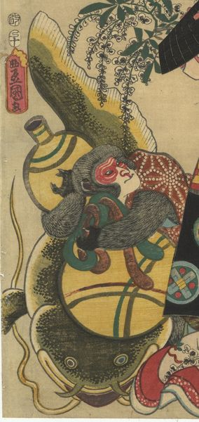

← 图鉴索引

猿が瓢箪で鯰を押さえようとしている。
著作者：豊國／出典：親書誌：U426_nichibunken_0441：大津繪所作ノ内／日付：2017／資源識別子：U426_nichibunken_0441_0002_0000
Copyright (c)2010- International Research Center for Japanese Studies, Kyoto, Japan. All rights reserved.